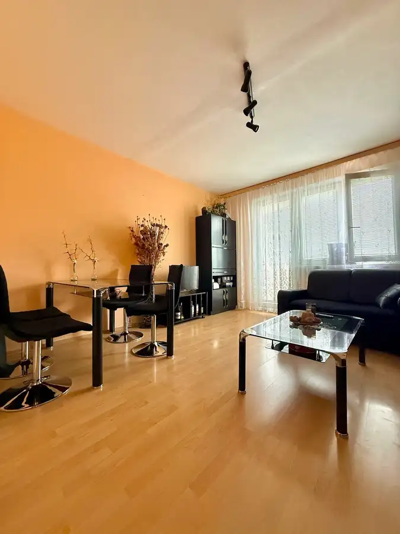
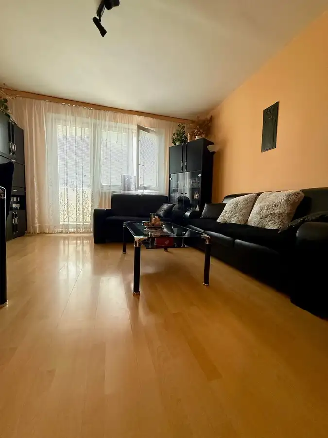
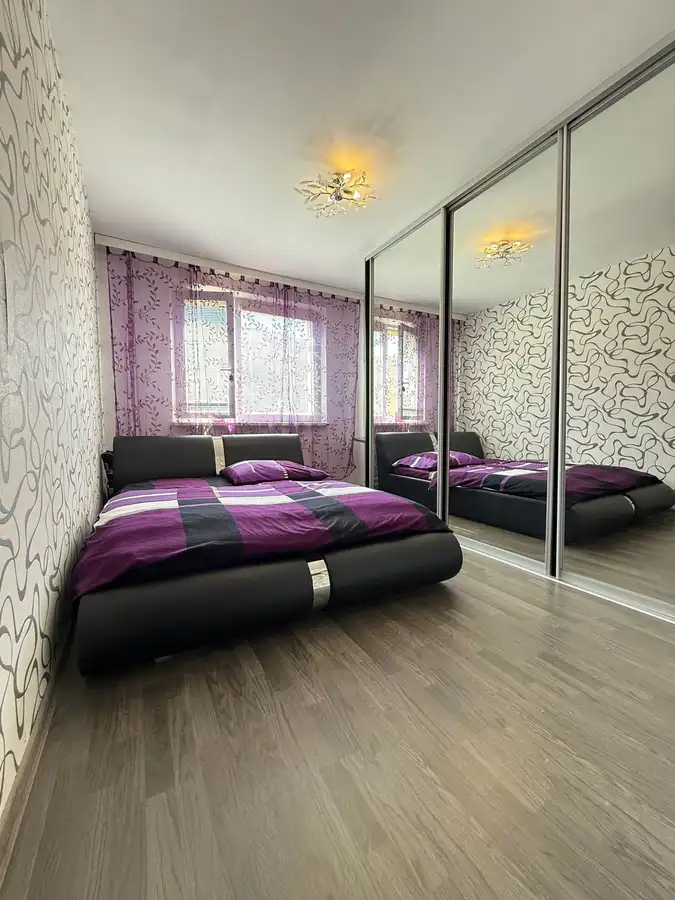
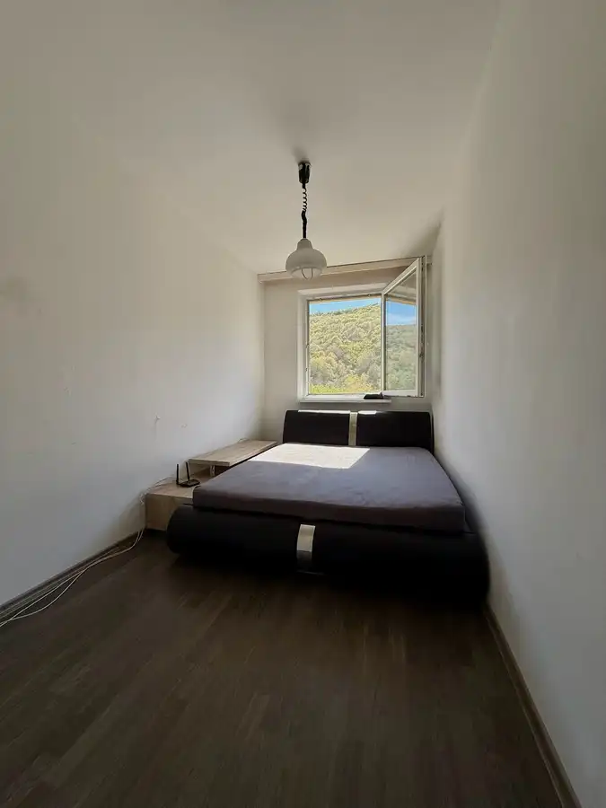
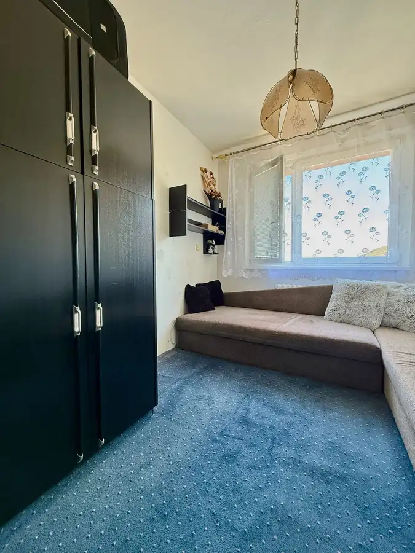
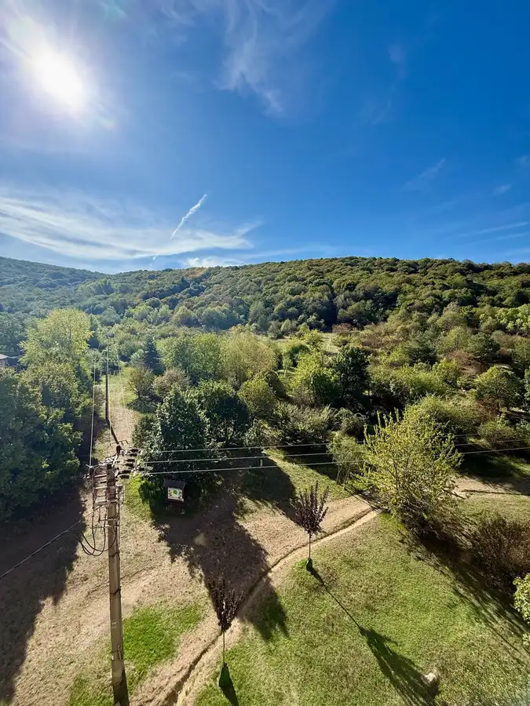
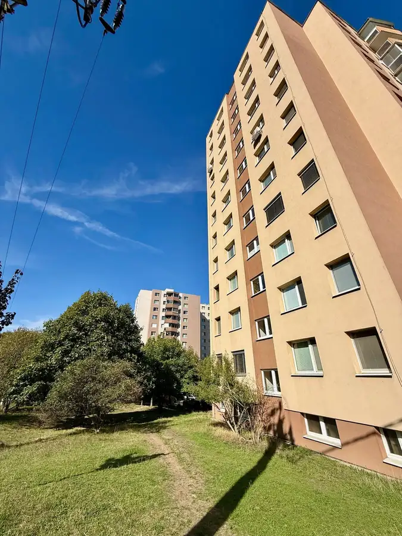

Byt priamo pod lesom, Devínska nová ves
Devínska Nová Ves, Bratislava








- Dispozícia4-izbový
- Plocha65.18 m²
- Poschodie5. z 11
- StavČiastočná rekonštrukcia
- VlastníctvoOsobné
O nehnuteľnosti
Ponúkame na predaj prakticky dispozične riešený byt v obľúbenej lokalite Devínskej Novej Vsi, na ulici Pavla Horova .Byt je pôvodne 3-izbový, avšak vďaka veľmi šikovnému dispozičnému riešeniu je prerobený a využívaný ako 4-izbový byt. Veľkou výhodou je aj uzavretá spoločná chodba pred bytmi, ktorá bola v spolupráci so susedom oddelená a slúži výhradne majiteľom týchto bytov ako súkromná predsieň. Vznikol tak príjemný a praktický priestor navyše, ktorý poskytuje viac súkromia, úložného priestoru a komfortu.Byt sa nachádza na 5. poschodí z 11, v bytovom dome s dvoma výťahmi. Jednou z jeho najväčších predností sú nádherné výhľady a krásne zelené prostredie – bytový dom sa nachádza prakticky priamo pod lesom. Dom bol zateplený a je vlastníkmi udržiavaný, vo veľmi dobrej kondícii. Dispozícia bytu je veľmi praktická a príjemne rozdelená na dennú a nočnú časť. Pri vstupe do bytu sa nachádza kuchyňa prepojená s obývacou izbou, následne priestranná hala, z haly sú samostatné vstupy do troch samostatných izieb, kúpeľňa a samostatné WC.Vďaka tejto dispozícii ponúka byt tri samostatné izby, ktoré je možné využiť ako spálne, detské izby, pracovňu alebo hosťovskú izbu. Denná časť bytu – kuchyňa s obývacou izbou – sa nachádza hneď pri vstupe, zatiaľ čo tri samostatné izby sú situované ďalej v byte, čo poskytuje príjemný pocit súkromia.Byt prešiel staršou rekonštrukciou - plastové okná, plávajúce podlahy. Predmetom predaja je tiež podiel na pozemku pod bytovým domom, ktorý je v súkromnom vlastníctve majiteľov bytu. List vlastníctva bez tiarch.Byt sa nachádza vo veľmi príjemnej a vyhľadávanej časti Devínskej Novej Vsi, priamo pod lesom.Okolie ponúka množstvo zelene, pokojné prostredie a zároveň kompletnú občiansku vybavenosť. V blízkosti nájdete obchody, služby, školy, škôlky, reštaurácie, kaviarne, detské a športové ihriská či možnosti na prechádzky a oddych.Veľkým benefitom je veľké množstvo parkovacích možností v okolí bytového domu.Výborná je aj dostupnosť MHD a napojenie na hlavné dopravné ťahy. V blízkosti sa nachádza OC Bory a Nemocnica Bory, ako aj ďalšia občianska vybavenosť.Byt je vhodný pre rodinu, ktorá hľadá viac samostatných izieb, praktickú dispozíciu, dostatok súkromia a zároveň príjemné bývanie v blízkosti prírody, ale je vhodný i na investíciu, izby sa dajú separátne prenajať,Cena nehnuteľnosti: 228 990EUR, vrátane provízie pre RK a kompletného právneho servisu.V prípade záujmu o viac informácií alebo dohodnutie obhliadky ma neváhajte kontaktovať.Maklér:Ing. Andrea Nagyová0911 890 988andrea@realreality.skREAL REALITY Vám zabezpečí kompletný servis pri predaji, kúpe a prenájme nehnuteľností. Prostredníctvom hypotekárneho partnera Vám pomôžeme so zabezpečením financovania nehnuteľnosti.Vďaka spolupráci s právnou kanceláriou poskytujeme klientom komplexný právny servis počas celej transakcie.Cena ponúkanej nehnuteľnosti zahŕňa:vypracovanie potrebnej zmluvnej dokumentácie,realizáciu celej transakcie,poplatok za návrh na vklad do katastra nehnuteľností,poplatky za overenie podpisov kúpnych zmlúv u notára,doručenie podkladov na kataster,asistenciu pri odovzdaní nehnuteľnosti,asistenciu pri prepise energií a služieb,ďalšiu potrebnú asistenciu podľa dohody.
Parametre
- Bezpečnosť
- Kamerový systém, Videovrátnik
- Cena vrátane energií
- Nie
- Doprava
- Cyklistická infraštruktúra, Diaľnica, MHD
- Druh
- 4 izbový byt
- Dátum zverejnenia
- 27. 09. 2026
- Energetický certifikát budovy
- nie je
- Orientácia
- Južná
- Podlažie
- 5
- Počet izieb / miestností
- 4
- Počet nadzemných podlaží
- 11
- Počet spální
- 1
- Rok poslednej rekonštrukcie
- 2007
- Stav nehnuteľnosti
- Čiastočná rekonštrukcia
- Telekomunikácie
- Optická sieť, Internet, Káblová TV
- Typ
- Predaj
- Typ konštrukcie
- Panelová
- Vlastníctvo
- Osobné
- Vybavenie
- Sklad, Bezbariérový prístup, Detské ihrisko, Kočikáreň, Úschovňa bicyklov, Zabezpečovacie zariadenie
- Vybavenie objektu
- Podľa požiadavky
- Vykurovanie
- Ústredné
- Zariadenie
- Zariadené kompletne
- Úžitková plocha
- 65.18 m²